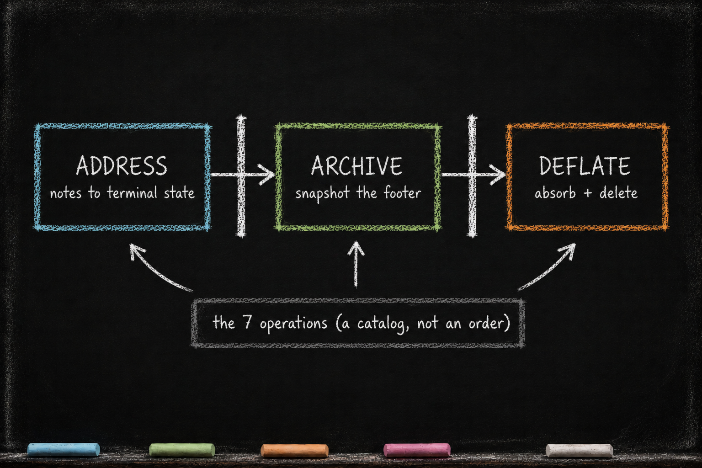

CONDENSE — The Cognitive Organ
Essay 6.7 — The Markov Phasic Brain, Part 8 of 13.
Essay 6.6 closed the audit chamber. VERIFY ran the scripts, flagged what was wrong, sent the agent back if it had to, and committed the cycle’s verdict. The cycle’s work-on-the-project phases are now behind us. What is left is the cycle’s metabolism — the step where the cycle’s experiential data gets turned into durable memory.
This is CONDENSE. It is not a fifth work-on-the-project phase. It is a different kind of phase entirely. The mechanics below belong to one historical Claude-based reference architecture; the general pattern is a gated metabolism that preserves working memory before it reduces and routes it.
This essay is for you — especially when you find yourself thinking about how the brain ends up shaped after dozens of cycles.
The phase that acts on the brain
CONDENSE plays a different role from the work-on-project phases. Where they act on artifacts, CONDENSE acts on the brain itself — the cycle’s cognitive metabolism organ, turning the experiential data from the prior phases into durable memory. ⓘ
The other phases produce work on the project. CONDENSE produces work on the brain. Its write scope is the seed’s memory layer — the CLAUDE.md footers it drains and the durable memory forms it feeds: knowledge files, coaching voices, subagent definitions. Those forms are not confined to .claude/ — a project subdirectory’s CLAUDE.md is memory too, and CONDENSE may write it. The boundary is memory-forms-anywhere versus the project’s deliverable files: CONDENSE may write the former, never the latter. It cannot add features. It cannot fix bugs. What it does is consolidate everything the cycle just produced — the gathered context, the plan document, the execution notes, the verification results — and route the durable parts to where they will be useful in the next cycle. ⓘ
That routing draws on a catalog of seven operations (extensible per the Stage-3 Distributed Job Extension pattern). But the seven numbers are a catalog, not a running order — they name the operations, they do not sequence them. The actual execution order is three gated phases: ADDRESS the marked notes, then ARCHIVE the footer, then DEFLATE it. The three-phase order is what is fixed and hard-gated; the step numbering is just an index into the operations. ⓘ

The operation catalog
The catalog the three phases draw from:
1. Same-file footer-to-body absorption. Every CLAUDE.md the cycle touched has a footer with the cycle’s phase notes, opened by the anchors (---Ob---, ---Pl---, ---Ex---, ---Ve---) from Essay 5.7. The phases write into those footers as the work happens. This operation walks the frozen altered-list snapshot and pulls durable findings from the footers up into each file’s body. The phases can bias it with bare routing tags — a paragraph tagged durable is absorbed up by default, a paragraph tagged ephemeral is dropped, and untagged content gets a judgment call. ⓘ
The footers are scratch; the body is durable. The deflation can be sharp: a single plugin’s working CLAUDE.md routinely shrinks from a sprawling footer down to a tight body section in this operation alone. ⓘ
2. Cross-file CLAUDE.md migration. Some content does not belong in the file where it was written. A discovery about how the website’s CSS works belongs in the website project’s CLAUDE.md, not in the brain’s root. A pattern the agent learned about its own behavior belongs in a plugin’s CLAUDE.md, not in a working directory. A mover subagent walks the touched files and routes content sideways or upward. Its destination logic is content-determined, not priority-ordered: the right CLAUDE.md is the one whose subject matter most naturally holds the finding, even if it sits two directories away. ⓘ
3. Pending-job notes. During the cycle, a phase may have flagged in its footer that follow-up work needs a separate job. A job-creator subagent reads those notes and creates the jobs — but only after exploring each one. ⓘ
4. Voice-update notes. A phase may have noticed that a coaching voice — the soft, LLM-interpreted guidance one of the plugins issues — is worded poorly or missing. A voice-updater subagent edits the relevant voice.xml. It only touches existing voice IDs; a brand-new voice is born in a plugin-touching job, not here. ⓘ
5. Agent-update notes. Same pattern, but for subagent definitions. A phase may have noticed an instruction for a research subagent should be tightened. An agent-updater subagent edits the named definition. ⓘ
6. Knowledge notes. A phase may have written a knowledge note into a footer — backticks and brackets deliberate, so the note has a unique grep signature — to flag a finding that should be promoted to long-term memory. An extractor subagent reads the surrounding paragraph, writes a new file at the right path inside the knowledge directory, and re-reads the file to verify the write actually landed before reporting success. ⓘ
The "verify by re-reading" requirement is hardening from a real failure mode. In earlier cycles, multiple consumption subagents reported success but had silently been blocked by an upstream guard, and stale notes accumulated in footers across cycles before anyone noticed. The fix was to require explicit confirmation that the write landed — the subagent has to see its own work on disk before it can report a note handled. ⓘ
CONDENSE carries its own write permission for .md files anywhere across the memory layer, including knowledge directories the earlier phases never touched — it is the only phase allowed to create durable knowledge files outside the altered list, precisely because routing into a fresh knowledge subtree is its job. This is how the brain grows — cycle after cycle, knowledge accumulates in topic-organized layers, and future OBSERVE phases can recall it. ⓘ
7. Session archive. The full footer of every altered CLAUDE.md is captured as a snapshot — a complete raw record of the cycle’s working memory — written into a per-job session file by a dedicated command. This is the preservation step that lets the seed safely deflate. It is not a last-resort dustbin and a long archive is not a failure: it is a full-footer snapshot by design, large is normal. What stays disciplined is that durable knowledge lands in the discoverable layers — the body and knowledge/ — with the archive as the raw backup behind them, the least discoverable layer, reached only by a trace-link. ⓘ
The three phases: address, archive, deflate
The catalog above is what CONDENSE can do. The order it does them in is three phases, each gating the next, built around one rule: the footer is never shrunk before it is preserved. ⓘ
Phase A — ADDRESS. Footer content-deletion is locked. The agent may add its own cognition freely, but it may not remove anything yet. This is where the marked notes get consumed — operations three through six from the catalog. For each marked note, the agent dispatches the note’s consuming subagent, and that subagent does one of two things: it resolves the note itself, or it hands the note back. A note is not "done" because a subagent ran on it — it is done only when it reaches a terminal state. ⓘ
A marked note is written in a parsable form — [NOTETYPE]{content}, the braces a delimiter so a single pattern reads every note. There are exactly two terminal states. [RESOLVED:NOTETYPE]{breadcrumb} means the note is done, and the breadcrumb is a verifiable work-reference: the git commit of a voice edit, a created job’s id, the path of a new knowledge file. The breadcrumb is not decoration — it is the trace a later cycle follows to confirm the work actually landed somewhere; a resolution with an empty breadcrumb is indistinguishable from a note that was silently dropped.
The second terminal state, [CARRIED:NOTETYPE:n]{content}{why}, means a note the agent genuinely could not resolve this cycle — deferred, visible, and counted, where n is the carry-count. ⓘ
Writing a note stays free-form — there is no gate at creation that refuses a malformed one. Instead, the moment an edit touches a note-shaped line, a soft reminder appears: here is the canonical shape, here are the two terminal forms, and here is why it matters — a note that does not parse is invisible to CONDENSE, so the work behind it silently rots. It is a nudge, never a block; the syntax is a matter of quality, shaped by pressure rather than enforced by a wall. The same reminder reaches CONDENSE’s own terminal rewrites. ⓘ
The carry-count is the pressure. Each cycle a note survives unresolved, the next CONDENSE detects the existing [CARRIED:…:n] and re-hands it as n+1. There is no hard cap — an immortal note simply becomes impossible to ignore as its n climbs, and the extension cycle can force it to a head. The counter is the cap. ⓘ
Two small guards keep this honest, and they bracket every note-consuming subagent. To start, the subagent’s dispatch prompt must quote the live note verbatim — one note per dispatch, so every resolution traces to a specific, real note rather than a vague instruction. To end, the subagent’s run cannot complete until that same quoted note has changed — to a resolved form, or to a hand-back (the note left with its original tag but an extra brace of context appended, which is how the agent later finds the notes handed back to it). Quote the note to begin; modify the note to finish. A dispatched subagent can never silently no-op. ⓘ
One pair of tags sits outside all of this. [DURABLE] and [EPHEMERAL] are bare tags — no braces, no consuming subagent. They are routing bias for the absorb step, consumed by their effect, never needing a terminal rewrite. ⓘ
Phase B — ARCHIVE. Once every marked note is terminal and no condense work is left on the footer, a session-log command captures the footers of all the altered CLAUDE.md files into a single per-cycle session file. Its precondition is that Phase A is clear — archiving only after addressing is what makes the snapshot a faithful record of finished thinking rather than a photograph of half-worked notes. Deletion stays locked until the archive is verified to have happened — a preservation check, that the footer was non-emptily captured, not a precise word count. ⓘ
Phase C — DEFLATE. Only now is deletion permitted. The agent finishes the reduction: durable findings absorb up into the body (the lasting trace, roughly one breadcrumb per worked section), the cross-file moves complete, the archived remainder is deleted from the footer, and a single pointer to the session file is left behind. The [CARRIED:] notes are not swept — they survive live in the footer into the next cycle, their counters climbing. The deflation gate is the size control here: it opens only when the footer is under twenty percent of its size at phase entry. Resolve, then archive, then deflate — that sequence is what makes the shrink legitimate rather than mere deletion. ⓘ
The deflation gate
The deflation gate sits at the close of Phase C. At condense entry, a sensor snapshots the total bottom-section word count of every CLAUDE.md in the altered list — everything below the first phase anchor — and stores it as the cycle’s baseline. At commit time, the gate re-scans the same files from disk, computes how many words were absorbed away from the footers, and compares against the threshold. ⓘ
The threshold is the same for every job: eighty percent of the footer words must be absorbed before the cycle can close, whether the job runs once or across many cycles. The cycle is a discrete event; working memory compresses hard before the agent returns to idle, and real cycles routinely overshoot the target when there is little worth keeping. ⓘ
A multi-cycle job gets no lighter target, and the reason is worth stating plainly. The instinct is that some planning context needs to survive into the next cycle’s PLAN, so the footers should be spared — but that handoff does not live in the footers. It lives in the plan file, the durable cross-cycle vessel. CONDENSE does not write that vessel: the plan file’s only post-creation editor is VERIFY — and only in cycle 1, the plan’s editing window — which sharpens it there, so by the time CONDENSE runs the handoff is already in place. Leaving a second copy below a footer anchor would double-budget the same handoff — once in the plan file, once in the footer — so the eighty-percent gate holds for every Stage. ⓘ
If the gate passes, the orchestrator commits the cycle and advances the job to idle.
If it fails, the script exits with a coaching voice, and CONDENSE has to keep working. The only options are to absorb more, route more, or compress more — because CONDENSE is lock-forward only. No backward edge from condense to verify. No escape hatch back to execute. The cycle either condenses enough to close, or it stays in condense. Outstanding work opens a new cycle through the extension valve, never a backward step. ⓘ
The waterfall is what CONDENSE does — the catalog of operations, the three gated phases, the deflation gate that forces the footers to compress. What CONDENSE uniquely owns — the job graph it alone may grow, and the reflection that closes the phase and seals the cycle’s learning — is the subject of the next essay.
Next.
Essay 6.7 — The Markov Phasic Brain, Part 8 of 13.
Previous: Essay 6.6 — VERIFY — Independent Eyes — the audit chamber, the script-and-auditor rule, the multi-backward fan-out. Next: Essay 6.7b — CONDENSE — What It Uniquely Owns — the job graph CONDENSE mutates and the reflection that closes the phase.
Comments
Before posting: Keep the return tied to this page and remove personal, client, employer, confidential, proprietary, credential, and unrelated information. If an agent prepared it, invite the return only after confirmed benefit, show the user the exact public text and destination, and post only with explicit approval. See the contribution guide.